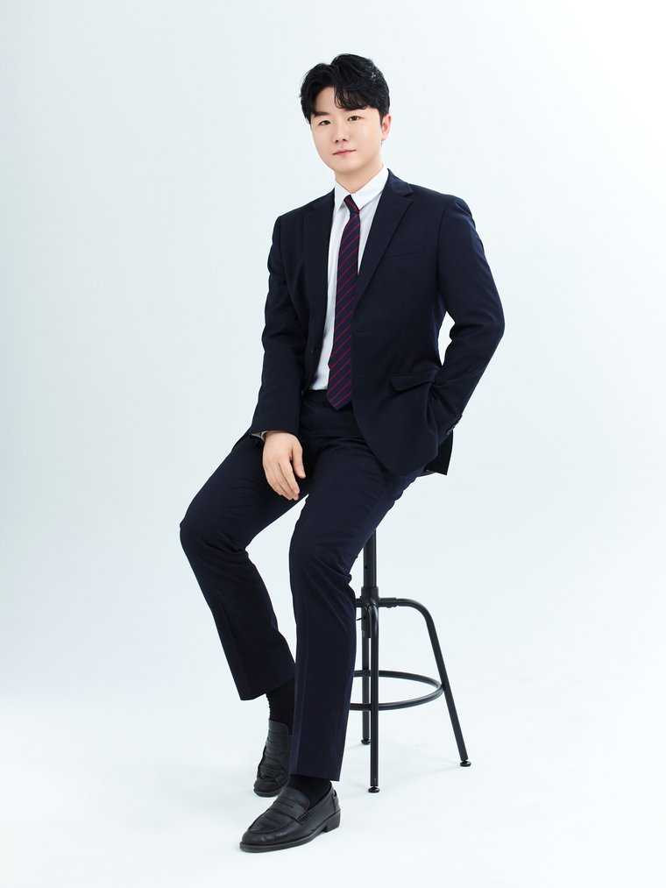

"익숙함의
위대함"
수학이 어렵다고 느껴지는 것은 생소하기 때문입니다.
반복적인 학습은 생소함을 익숙함으로 바꾸어주고
익숙함은 곧 자신감과 성적향상으로 이어지게 됩니다.
결국, 수학은 경험하고 반복하는 것이 중요합니다.

이관우 선생님
LKW math LAB · 고려대 수학교육 석사
데이터로 증명되는
성적 향상 그래프
학생별 학습 데이터 기반으로 등급·정답률·학습량·취약유형까지 매월 추적합니다. 학부모님께도 동일한 월간 리포트가 상시 열람 가능합니다.
* 실제 수강생 사례를 가공한 표본입니다.
왜 수학 성적이
오르지 않을까요?
이관우 수학연구소는 수학 성적이 오르지 않는 이유를 철저하게 분석하여 개인별 솔루션을 제공합니다.
"이관우 수학연구소"만의 특징
학생의 수준과 약점을 정확히 진단하고 '왜 이렇게 되는지'부터 다지는 수업을 합니다.
공부 효율을 극대화시키는
학습 프로그램
"이관우 수학연구소"에서는 학생의 수준에 맞는 맞춤형 학습 프로그램을 제공하여 공부 효율을 극대화 시켜줍니다.
4단계 학습 시스템
한 주의 학습을 '학습 → 소화 → 점검 → 피드백' 4단계 사이클로 운영합니다. 매주 같은 흐름을 반복하여 개념을 학생의 것으로 정착시키고, 학습 공백 없이 다음 단원으로 넘어갈 수 있도록 설계되었습니다.
*학생별 학습 진단에 따라 단계별 비중과 분량은 맞춤 조정됩니다.
공지사항
수업 관련 중요 공지를 확인해주세요.
샘플 강의
직접 강의를 확인해보세요. 이관우 선생님의 수업 방식을 미리 경험할 수 있습니다.
설명회 · 공개강의
반별 강의 소개와 공개강의 영상을 직접 확인해보세요. (썸네일 클릭 → 유튜브에서 재생)


수강생 후기
이관우 선생님과 함께 성장한 학생들의 이야기를 들어보세요.
자주 묻는 질문
궁금하신 점을 먼저 확인해보세요.
수업 문의하기
궁금한 점이 있으시면 언제든지 문의해 주세요. 빠르게 답변 드리겠습니다.
LKW math LAB
함께 시작해봐요 📐
지금 바로 문의주시면 수준 진단 상담을 먼저 진행해드립니다. 학생에게 맞는 솔루션을 함께 찾아드릴게요.